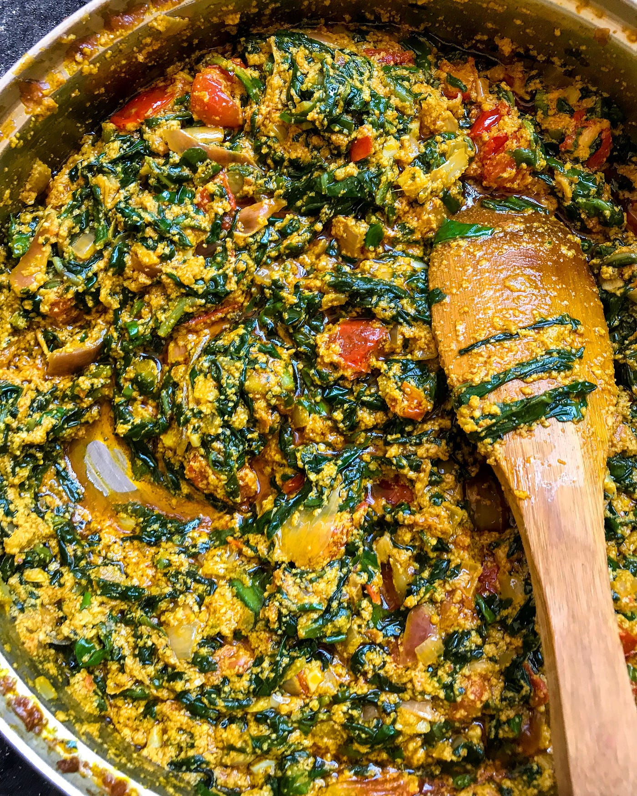

Palava sauce

Description
Palava is a word coined from the English word palaver
which in turn is from a Portuguese word that means idle chatter.
However this word became the name of a popular West African delicacy,
no one knows. But the meaning of the name suggests that the delicious
taste of the dish brought with it idle chatter by the people who ate
it.
This dish cannot be originally linked to any West African country.
In Ghana, palava sauce is prepared with kontomire leaves and
agushie(melon seeds) as the main ingredients. Palava sauce
can be served with any dish of choice some of which are cooked
rice, yam and plantain.
Ingredients
5 Servings
- Kontomire leaves/ cocoyam leaves About 15
- 5 small tomatoes
- 3 medium sized onions
- Pepper
- 1 large smoked salmon
- 1 cup of grounded melon seeds(agushie or akatua)
- 1/2 cup palm oil
- 1 Salted fish (Koobi)
- 3 tsp of shrimp powder
- Salt
- Spices
Steps
Prepare the ingredients
-
Get grounded melon seeds from the market. Add water,
make it into a paste and set it aside.
-
Wash kontomire leaves with a generous amount of salt
to prevent itching of hands when cutting.
- Cut kontomire into desired stripes.
-
Put the cut kontomire into a saucepan with little
water and place on high heat. Cover and allow to boil.
-
Turn the kontomire after about five minutes of
cooking to make sure everything is cooked thoroughly.
Turn off fire and set aside.
- Blend two onions, tomatoes, pepper and preferred spices
together, set aside.
-
Remove the flesh of the salmon, break into two and remove
the bones, break into desired sizes, set aside.
- Slice the remaining onion.
To make the stew
- Pour palm oil into a medium saucepan. Add half of the sliced
onions and salted fish if using. Fry till onions are softened.
- Add the blended tomatoes, onions, spices and pepper.
Let it simmer on medium heat. Add the salmon,
salt and grounded shrimp if using.
- Cover and let simmer for 10 minutes till sauce is bare thickened.
Add in the blended melon seeds, do not stir,
cover and reduce heat to low.
-
Let it simmer 8 to 10 minutes or till the melon seed paste sets.
Add the steamed kontomire with gentle stirring. Add the remaining
sliced onions.
-
Let simmer for about five minutes till onions are softened.
Serve with yam, rice, plantains or sweet potatoes.